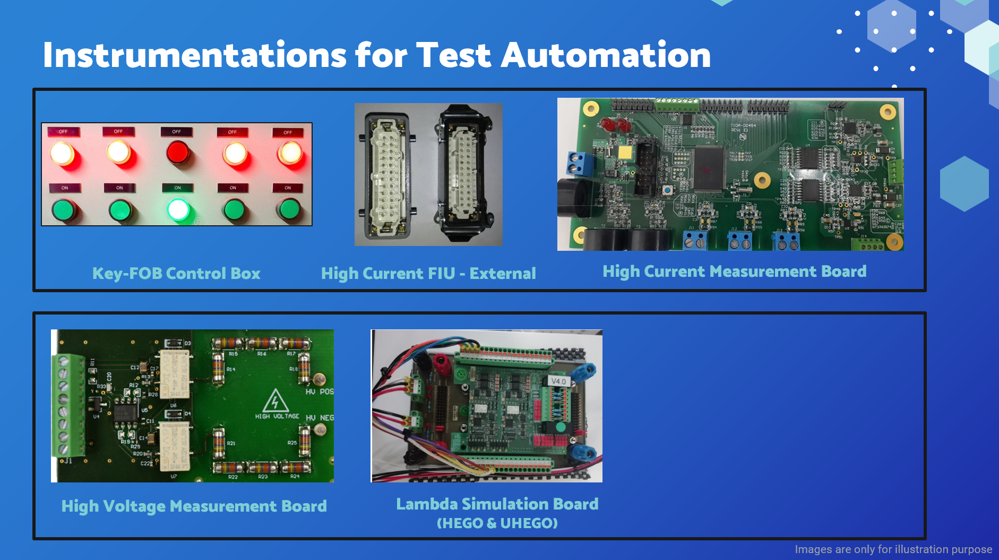

Professional Summary
Associate Principal Engineer
Welcome to My Professional Portfolio
With over 19 years of experience in embedded system development and real-time verification & validation environments, I have cultivated a robust career marked by leadership and innovation. As an Associate Principal Engineer, I have consistently driven performance excellence, making significant contributions to the automotive and consumer electronics industries.
Throughout my career, I have honed my expertise in managing people and projects, ensuring that complex engineering challenges are met with strategic and effective solutions. My background in engineering leadership and technical competence has empowered me to guide teams through intricate projects, delivering results that align with both industry standards and business objectives.
Explore my portfolio to discover how my commitment to engineering excellence has shaped successful outcomes across diverse and demanding environments.
Leadership and Management:
- Led and line-managed teams in Hardware-in-the-Loop Simulation (HILS), Test Automation and Validation (A&V), Model-Based System Engineering (MBSE), and Model-Based Design (MBD), delivering end-to-end testing solutions across multiple projects of varying complexity.
- Acted as the focal point for technical issue resolution, liaising with the Engineering counterpart Team, and engaging with Programme Management to ensure accurate and achievable engineering estimates.
Project and Risk Management:
- Proficient in project planning, tracking, risk analysis and mitigation, effort and costing, bill of materials preparation, procurement support, and mentoring junior team members.
- Experienced in preparing project plans using Gantt charts to follow either Waterfall or Agile workflows, ensuring effective scheduling and resource allocation.
- Reported progress against integrated plans, highlighting issues, identifying priority calls, and effectively communicating technical risks to the responsible programme management team.
Infrastructure and Technical Development:
- Extensive experience in developing test infrastructure for Model-in-the-Loop (MIL), Processor-in-the-Loop (PIL), and HILS from scratch using industry-standard solutions, enhancing the efficiency and accuracy of product validation processes.
- Expert in designing, developing, commissioning, and maintaining HILS facilities using MathWorks Toolchain and dSPACE/Speedgoat Systems.
- Expert in control systems engineering with extensive experience in developing Rapid Control Prototyping (RCP) systems from the ground up.
Technical and Domain Expertise:
- Skilled in MATLAB, Simulink, Stateflow, C/C++ S-Function for Simulink, and various MATLAB plug-ins for Embedded Systems.
- Knowledge in control system Requirement analysis, Architecture design, Hardware & Software development, including ancillary systems like Power management, Cooling system & Housing and enclosures.
- Excellent understanding of automotive powertrain, body, chassis, active safety systems, and robotics locomotion and navigation systems.
My Works
Engineering Expertise
Design, Develop, Commission & Maintenance of Hardware in the Loop Simulation (HILS) facilities.
- MathWorks - Matlab, Simulink, Stateflow, Simscape Tools
- dSPACE HIL Simulators
- dSPACE ControlDesk, ConfigurationDesk
- Speedgoat HIL Simulator
- Simulink Real-Time & HDL Workflows
- Python, C & C++
- Control System Engineering
Core Activites
- Working closely with cross-functional teams to ensure all verification & validation requirements are considered.
- Analysing Control System's circuit schematics and identifying the points that interest of HIL Simulator interface.
- Preparing HIL Simulator configuration
- Identifying Simulator supplier, Request for Quotation (RFQ) and Quotation analysis
- Procurement initiation
- Identifying Real-Time Simulation requirements
- Identifying Test Automation requirements
- Liaising with supplier for the project progress analysis
- Unit Under Test (UUT) preparation for HILS interface
- HIL-UUT Interface Assembly & Harness preparation
- Real-Time Simulations:
- Interface Model
- Sensor Model
- Actuator data measurement Model
- Rest Bus Simulations
- Plant Models
- Fault Insertion Unit (FIU)
- Override and Test automation harness
- Factory Acceptance Testing
- HILS commissioning:
- Open Loop
- Closed Loop
- Demonstration & Handover
My Projects
Hardware in the Loop Simulation
The primary advantage of utilizing a HILS facility is that it enables the testing of controllers under conditions that are impractical or impossible to replicate in real-world environments.
- Enhanced Testing Accuracy
- Cost Efficiency
- Improved Safety
- Accelerated Development Cycles
- Comprehensive Validation
Industires utilising HILS Facilities
| Aerospace & and Defence | Automotive | Energy and Utilities | | Railway and Transportation | Marine | Robotics and Industrial Automation | Telecommunications | Medical Devices | Consumer Electronics |
Hardware in the Loop Simulation
Design, Development, and Commissioning of HILS facility for 14MY Vehicle Architecture.
OEM - USA
- ECUs under Test:
- Control Module (BCM)
- Seat Modules (SM-A&B)
- Climate Control Unit (CCU)
- Anti-lock braking system (ABS)/
- Electronic Stability Programme (ESP)
- Electric Power Assisted Steering (EPAS)
- Engine Management System (EMS)
- Transmission Control Unit (TCU)
- Tools:
- dSPACE HIL Simulator (PHS Bus Full Size)
- dSPACE ControlDesk
- MATLAB Simulink
Hardware in the Loop Simulation
Design, Development, and Commissioning of HILS facility for the vehicle propulsion system.
OEM - UK
- Responsibilities:
- Requirement Gathering
- Facility Design & Optimization
- BOM & Procurements
- Simulation Development
- Wiring & ECU Integration
- Commissioning (Open & Closed Loop)
- Demonstration& Handover
- Maintenance
Propulsion HiLS: Complete inhouse
- dSPACE PHS Bus Simulator
- dSPACE SCALEXIO Simulator
- dSPACE ControlDesk
- dSPACE ConfigurationDesk
- dSPACE ModelDesk
- MATLAB Simulink & Stateflow
Hardware in the Loop Simulation
Design, Development, and Commissioning of HILS facility for the multiple systems.
OEM - UK
- ECUs Under Test:
- Body Control Module (BCM)
- Gateway Module (GWM)
- Door Modules (DDM/PDM)
- Seat Modules (NGSM)
- HVAC Control Module
- Anti-lock braking system (ABS)/
- Electronic Stability Programme (ESP)
- Electric Power Assisted Steering (EPAS)
- Tools:
- dSPACE PHS Bus Simulator
- dSPACE ControlDesk
- MATLAB Simulink & Stateflow
Hardware in the Loop Simulation
Design, Development, and Commissioning of HILS facility.
OEM - UK
- Systems Under Test:
- Active Safety System (ABS)
- Powertrain System
- Body System
- Chassis System
- Tools:
- dSPACE Simulator
- dSPACE ControlDesk
- dSPACE ModelDesk
- dSPACE ConfigurationDesk
- MATLAB Simulink
Hardware in the Loop Simulation
Design, Development, and Commissioning of HILS (Driver in the Loop) facility.
OEM - UK
- Systems Under Test:
- Powertrain System
- Chassis System
- Tools:
- dSPACE Simulator
- dSPACE ControlDesk
- dSPACE ModelDesk & ASM
- dSPACE MotionDesk
- dSPACE ConfigurationDesk
- MATLAB Simulink & Stateflow
Hardware in the Loop Simulation
Design, Development, and Commissioning of HILS facility for Robotics Projects.
- Systems Under Test:
- Locomotion Controller
- Navigation Controller
- Driveline Module
- Tools:
- Speedgoat Simulator
- Speedgoat FPGA Modules
- Speedgoat Electric Motor Emulators
- MATLAB Simulink Real-Time
- UNITY Simulation
- Major Activities:
- Requirements Elicitation
- HILS Configuration Development
- Supplier Analysis
- RFQ & Quoattion Analysis
- Simulations Development
- Factory Acceptanc Testing (FAT)
- Integration & Commissioning
- Demonstration & Handover
HILS - Technical Solutions
Battery Electric Vehicle (BEV) HILS facility.
OEM - UK
- Tools:
- dSPACE Simulator
- dSPACE ControlDesk
- dSPACE ModelDesk
- dSPACE ConfigurationDesk
- MATLAB Simulink
- dSPACE ASM based Simulation Models
HILS - Test Automation Instrumentations
External Instrumentations for Test Automation - HILS facility
- Electro Magnetic Brakes with Position Encoder
- Key FOB Controls Automation
- High Currnt External FIU
- High Currnt & Voltage Measurement
- Lambda Sensor Module (O2 Sensor)

Unit Under Test - HILS Interface Assembly
- Enables ECU Interface with HIL Simulator
- Easy to swap ECUs
- Easy to swap I/O Pins
- Posibility of multiplexing Unit Under Test
- Using one HIL Simulator for multiple ECUs under Test
HILS Facility Development Process
Below are the process I follow as part of HILS facility development from scratch.
- Requirement Elicitation
- Configuration Development
- RFQ & Quoattion Analysis
- Simulations Development
- Commissioning
- Demonstration & Handover
Automotive System Electrical Architecture Analysis
Key areas typically analysed with an automotive electrical architecture:
- Power Supply and Distribution:
- Battery
- Alternator
- Fuses and Relays
- Control Units and Modules:
- ECUs (Electronic Control Units)
- Central Gateway Module
- Communication Networks:
- CAN (Controller Area Network) / CAN-FD (Flexible Data-Rate)
- LIN (Local Interconnect Network)
- FlexRay
- Ethernet
- Sensors and Actuators:
- Sensors: Detects and measure physical properties (e.g., temperature, pressure, speed) and send this information to the ECUs.
- Actuators: Executes commands from the ECUs to perform actions (e.g., opening valves, turning on lights, moving mirrors).
Career Path & Timeline
- BPL Telecom Ltd, INDIA [3 Years]
- Design Engineer - R&D
- Robert Bosch Engineering & Business Solutions, INDIA [3 Years]
- Senior Software Engineer: Active Safety Systems
- TATA Elxsi, INDIA [3 Years]
- Specialist Engineer: Hardware in Loop Simulations
- Jaguar Land Rover, UK [6 Years]
- Technical Stream Lead: Hardware in Loop Simulations (Deputation)
- TATA Elxsi, INDIA [2 Years]
- Senior Specialist Engineer / Project Manager
- Dyson Technology Ltd, UK [2 Years]
- Associate Principal Engineer: HIL Test Facility Development
Educational Qualifications
- Birla Institute Of Technology And Science (BITS), Pilani, India
- Masters In Automotive Electronics
- Specialization: Automotive Electronics
- National Institute of Electronics and Information Technology, Calicut, India
- Post Graduate Diploma
- Specialization: Embedded System Design & Development
- Pondicherry University, India
- Bachelors Degree - Engineering
- Specialization: Electronics and Communication Engineering
About Me
I am an experienced Engineer with over 19 years of success in managing people and projects
within embedded system development and real-time verification & validation environments.
As an Associate Principal Engineer, I am celebrated for driving performance excellence and
contributing significantly to the automotive and consumer electronics industries.
My extensive background in engineering leadership, technical acumen, and
strategic development equips me to effectively lead teams and manage complex engineering projects.
Get in Touch
I am actively seeking new opportunities to leverage my extensive experience in embedded system
development and real-time verification & validation environments. If you have a position that
could benefit from my skills in engineering leadership, technical acumen, and strategic development,
I would love to hear from you. Please contact me via email, LinkedIn, or the email below.
Let's discuss how I can contribute to your team and drive success for your projects!
Thank You !
About HILS Facility
Hardware in the Loop Simulation is a critical facility in the verification and validation of products, particularly in the context of modern, high-end, complex embedded systems. HIL enables the testing of embedded controllers by integrating them with real-time simulations of the physical systems they are designed to manage. This approach allows engineers to validate system behavior under a wide range of conditions and scenarios that would be challenging, costly, or even dangerous to replicate in a physical environment.
By providing a controlled, repeatable testing environment, HIL ensures that both software and hardware components of the embedded system interact as expected with their external environment. This accelerates the development process, enhances product reliability, and significantly reduces the risk of failures in the field, which is especially crucial given the complexity and safety-critical nature of applications such as automotive, aerospace, industrial automation, robotics, and consumer electronics.
HIL - Beyond Integration & Testing
Hardware in the Loop simulation is a versatile and powerful tool that extends far beyond its traditional use in integration and testing. It can be effectively applied throughout the entire system development V-cycle, from early research and proof of concept to deployment and maintenance.
HIL can be utilized in the initial stages of development to explore and validate new ideas. Engineers can test the feasibility of different approaches in a controlled environment, allowing them to refine concepts before committing to a particular design. This helps in identifying potential issues and verifying the viability of a solution early on, reducing the risk of costly redesigns later.
During the requirements phase, HIL can be used to validate and refine the specifications. By simulating the system's operational environment, engineers can ensure that the requirements are realistic and complete, identifying gaps or ambiguities early in the process.
HIL supports the architecture and design phases by enabling the simulation of different architectural choices. Engineers can assess how different system components interact in real-time, allowing for better-informed decisions about system structure, component interfaces, and the allocation of functions across hardware and software.
In the implementation phase, HIL allows developers to test individual components against simulated environments before they are integrated into the full system. This helps in verifying that each module performs as expected and meets its design specifications, reducing integration issues later on.
HIL is traditionally known for its role in system integration, where it enables testing of the complete system by combining real hardware with simulated environments. This phase ensures that all components work together as intended and that the system meets its overall requirements.
During testing and validation, HIL allows for rigorous, repeatable testing of the system under a wide range of scenarios, including edge cases that might be difficult or risky to test in the real world. This ensures the system’s reliability, safety, and performance before it is deployed.
HIL can also be used for in-system testing, where the actual hardware is tested within the context of a simulated environment that mimics the final deployment conditions. This helps in identifying issues that might only become apparent in the final operational environment.
Even after deployment, HIL remains valuable. It can be used for ongoing validation and regression testing when updates or patches are applied to the system. HIL can simulate the operational environment to ensure that new changes do not introduce unforeseen issues. It also aids in troubleshooting and refining the system throughout its lifecycle.
By incorporating HIL throughout the system development V-cycle, organizations can significantly enhance the robustness, reliability, and performance of their products, while reducing time-to-market and development costs. This comprehensive application of HIL ensures that each phase of development is informed by real-world data and scenarios, leading to a more thoroughly validated and dependable system.
Variations of HILS Facilities
HILS facility can be implemented at various levels.
Each levels catering to different aspects of system testing and validation. These levels allow engineers to simulate and test different types of interactions between the hardware and the simulated environment, depending on the specific needs of the system being develope
Signal Level HIL: At the signal level, HIL focuses on the interaction of the embedded system's control units with the simulated environment via electrical signals. This is the most common form of HIL, where inputs and outputs are represented by digital or analog signals that the hardware can process.
Power Level HIL: Power level HIL involves the simulation and testing of power electronics and energy systems. Here, the focus is on the flow of power rather than just signals, simulating real-world electrical loads, battery systems, motors, or even entire power grids.
Mechanical Level HIL: Mechanical level HIL involves simulating mechanical loads and interactions, often through physical actuators or hydraulic systems that mimic the forces and motions the hardware would experience in the real world.